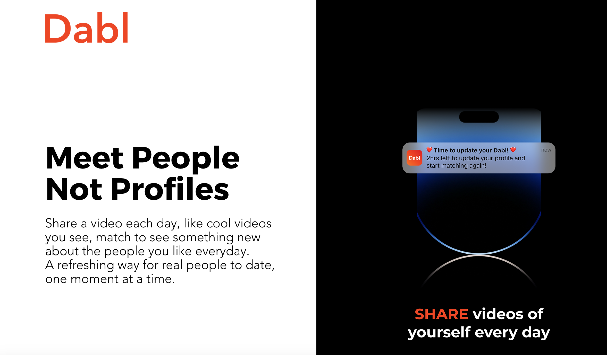
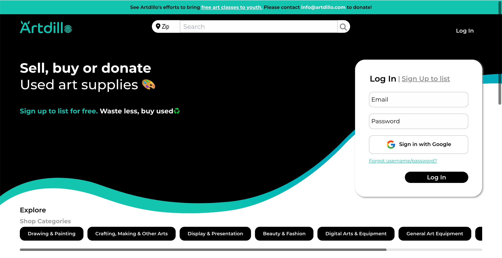
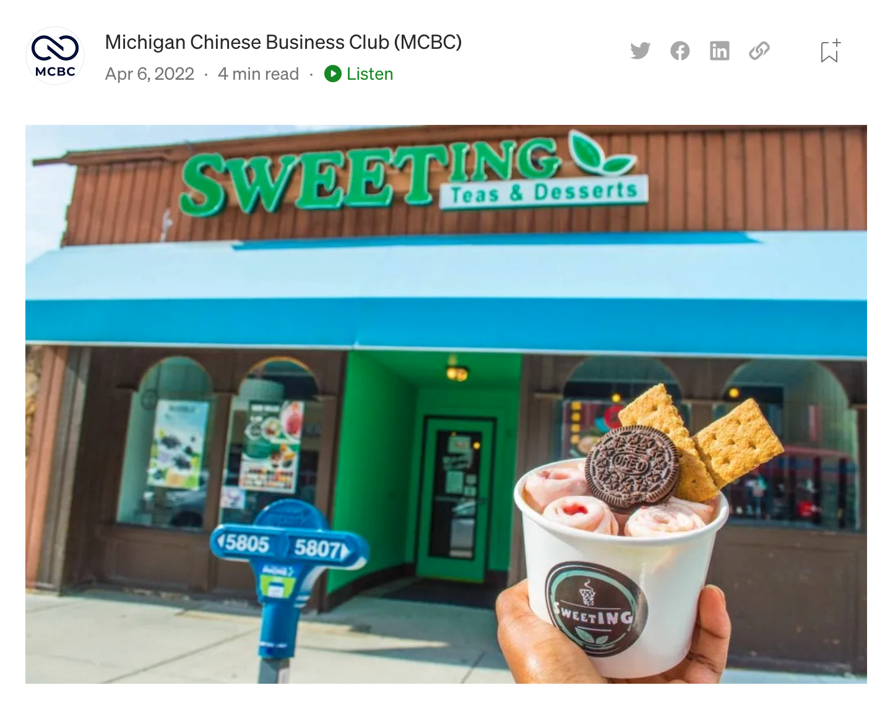
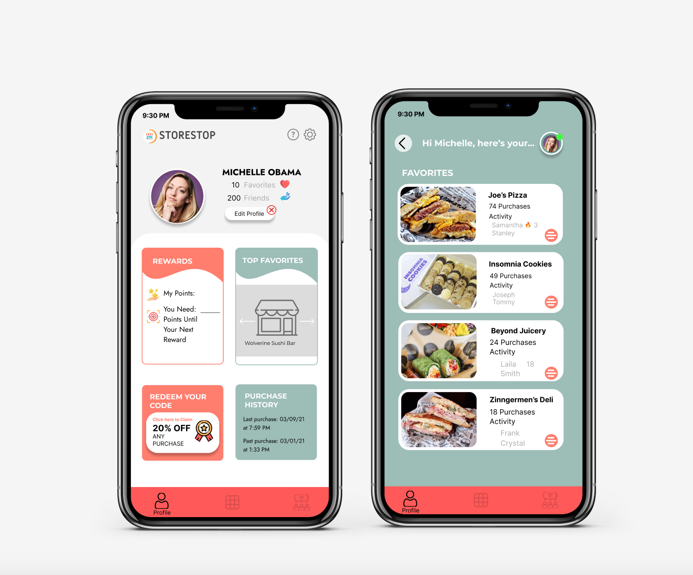
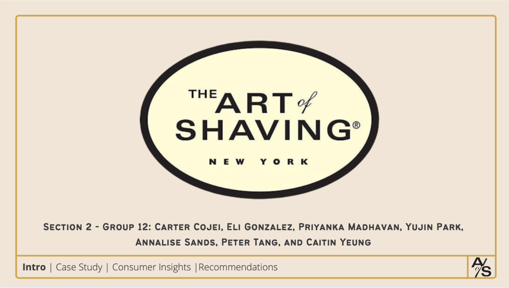

Consulting Projects

Dabl, a video-based dating app startup
Context
Background History of Dabl: it's a video-based dating app founded by two U-M alumni and their friend. Their
belief statement is "Meet People Not Profiles". Their app idea is to share a video each day, like cool videos
you see, match to see something new about the people you like everyday. A refreshing way for real people to
date, one moment at a time.
Problem: The app was originally created to help people meet each other throughout the campus. The creators
of the team wanted to revamp the app transforming it into an app that combines features from both BeReal and
Tiktok that allows people to sense each other's personalities when meeting others.
Solution: We worked with the creators to redesign the user interface using Figma, develop survey
questions,generate prompt ideas. We also researched our competitors, conducted market analysis, and developed
belief statements.

Artdillo, used-art supplies marketplace
Context
Background History of Artdillo: it's a marketplace for used art supplies founded by Rinnette Korea. Their
purpose is to reduce financial barriers of art by providing free art classes at local schools and BBBS Metro
Detroit.
Problem: Many people have not heard of Artdillo and there are a few competitors in the area. We needed to
define the competitive advantage of Artdillo while targeting young college students from ages 18 to 25 year
olds.
Solution: At the end of the semester we came up with 3 deliverables. The first being a tote bag painting
event in order to attract students to learn about Artdillo by using their stored art supplies to paint a tote
bag and contacting the President to further boost and advertise the event.
Kerrytown Markets, a local Ann Arbor marketplace
Context
Background History of Kerrytown Marketplace: it's a marketplace for all sorts of business. Today, the
neighborhood is home to several other Ann Arbor attractions, including Zingerman's Deli, the Ann Arbor
Farmers' Market, Kerrytown Concert House, Braun Court, the Sunday Artisan Market, antique stores, and more.
Problem: We noticed that they wanted to revamp their website in order to attract customers and wanted to
make more college students visit Kerrytown Marketplace more often.
Solution: We worked with our creative design team to meet weekly to work on the user interface using Figma
and transitioned the designs to Squarespace. After that, we also came up with a deliverable of an Easter Egg
Hunt and submitted it in a proposal.

SweetING, a local Ann Arbor Bubble Tea shop
Context
Background History of SweetING: it's local Ann Arbor Bubble Tea shop where students and residents go in for
authentic Asian snacks, meals, and drinks.
Problem: After COVID-19, the owner was having more trouble advertising the fact that they were reopening at
a new location. They also had many products on their menus and were having trouble marketing their new drinks.
Solution: We came up with a march madness for bubble tea and set up shop at Mason Hall which is a popular
location for students. We were able to increase brand awareness and also get feedback and answer survey
question in doing so.
P&G Febreeze Case Competition
Context
Background History of P&G: it's a multinational consumer goods company founded in 1837. Today, P&G is one
of the largest consumer goods companies in the world, with a portfolio of well-known brands including Pampers,
Gillette, and Olay. The company has a strong commitment to sustainability and social responsibility, with
initiatives aimed at reducing waste, conserving resources, and promoting diversity and inclusion.
Problem: P&G wanted to release a new product that targets specifically pet owners. P&G's Febreze sales are
declining due to increased competition and a lack of differentiation from other air fresheners in the market.
Solution: We came up with a few solutions to target these pet owners using social media platforms.
Introduce new innovative scent delivery systems, such as a Febreze plug-in device with adjustable scent
intensity, to create a unique selling proposition and increase market share.
Spice, a dating questions imessaging extension
Context
Background History of Spice: it's a dating questions imessaging extension that was created by 3 students at
U-M.
Problem: We noticed in the dating industry that many people have difficulties coming up with conversation
starters when talking to people on dating apps.
Solution: We created a survey and sent it out to people to determine whether or not people would use the
app. We created designs of the user interface using Figma and looked at the documentation for the UI Sticker
Extension Kit. Using the knowledge of the market research we implemeneted the information.
Case Studies

StoreStop, an app for local small businesses
Context
Background History of StoreStop: it's a an app that connects people to local small businesses. This was
created for the purpose of SI 110 as the final project.
Problem: Local small businesses often struggle to reach potential customers, and consumers may not know where
to find them.
Solution: StoreStop creates a platform for small businesses to reach a wider audience by connecting them with
local consumers through a user-friendly app that features exclusive deals and promotions.

Art of Shaving, a high-end men's shaving and skin care accessories business
Context
Background History of Art of Shaving: The Art of Shaving is a men's grooming brand that was founded in 1996
by Eric Malka and Myriam Zaoui in New York City. Malka and Zaoui were inspired to start the company after
struggling to find high-quality shaving products for men.
Problem: The Art of Shaving is facing increased competition from online retailers and struggling to maintain
sales in physical stores.
Solution: The Art of Shaving can differentiate itself by offering personalized grooming consultations and
experiences, while expanding its online presence through e-commerce and social media to reach a wider audience.
RPA in Consumer Goods Industry
Context
Background History of Dabl: Robotic Process Automation (RPA) is an emerging technology that automates
repetitive and rules-based tasks, allowing businesses to improve efficiency and reduce costs.
Problem: The consumer goods industry faces challenges such as supply chain management, high operational
costs, and increasing demand for personalized products, leading to inefficiencies and decreased profitability.
RPA can help consumer goods companies by automating tasks like inventory management, order processing, and
customer service, freeing up employees to focus on more complex tasks, reducing errors, and improving overall
efficiency and profitability.